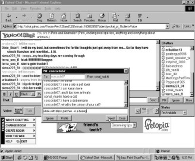
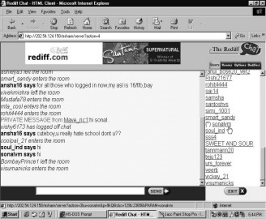
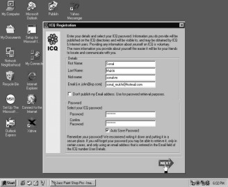
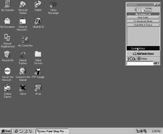
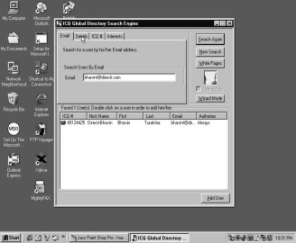
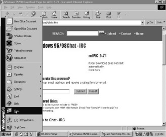
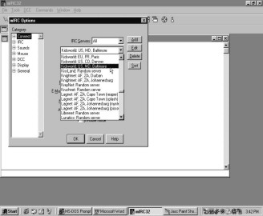
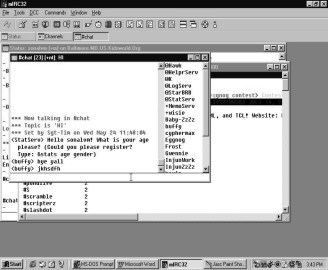

CHAPTER SIX
Chat
I’m sure that all of you must
have spent hours on the phone with your kitty party friends, discussing the
colour of your neighbour’s hair or the price of carrots at Crawford Market or
then a celebrity’s marriage. Well, you can do the same with friends from across
the seven seas. Log on to any of the chat modules available on the net and
share your opinion on the slim fit of a silver tab Levis with people from
around the globe. I’m sure everybody else too will have a remark or two to pass
on the figure hugging denim wear!! So what are you waiting for, let`s get
started and chat up a storm!
Type in www.yahoo.com in the address bar. From the homepage select the `Chat` link.
|
Screen 6. 1 |
Screen 6. 2 |
The Yahoo! chat page emerges. Click on the `Sign up for Yahoo! Chat!` option.
|
Screen 6. 3 |
Screen 6. 4 |
Similar to any other registration form, this one too demands your identity and your secret password.
To rescue you when you forget your password, you will be asked a simple question on the reply of which, a new password will be sent to you. Enter the other details regarding your gender, date of birth, occupation etc. You can skip supplying the optional information and send the form over for submission.
Once your Yahoo! chat ID has been approved, you can proceed to chat by clicking on the `Continue to Yahoo! Chat` switch.
|
|
|
|
Screen 6. 5 |
Screen 6. 6 |

Yahoo! Chat has a menu of chat rooms from which you can choose. You can visit the chat room according to the subject that pleases you. Are you a racing fan? A book worm? Or then a cat freak? Yahoo! Chat has chat rooms especially designed for your likes.
|
Screen 6. 7 |
Want to know how to rid your little pooch from ticks? Or then how to convince Ginger that the new cat food ain’t as bad as it tastes? Or get your goldfishes to gargle first thing every morning? Well, share your pet troubles and find solutions on the `Pets and Animals` chat room. Simply click on this chat room to be transported to the world of Tommy and Spotty. Hey, don’t worry you won’t have a daschund or an alsasian chatting with you. It will be two legged humans who share a similar passion for animals as you do.
Once you have logged on to a chat room you have to wait for the chat program to be loaded. Since it is a Java program it is fondly called 'chat applet'. While the applet unfurls you can go pet Caramel who is lazily stretched out on your grandma’s favourite rocking chair.
|
Screen 6. 8 |
Screen 6. 9 |
The chat screen appears. In the right window you have a list of all the current chatters who are logged on to this chat room. You have everybody in here, right from a Pegasus to an Indychef , from a Maddogs Parttime to an Italoandross. Even nursery rhyme heroine Jilly_vanilli is on the chat module. Me thinks she has switched professions from fetching pails of water to licking waffle coned vanilla ice creams. And of course, she has given up following chocolate boy Jack uphill! The central elongated window displays the chat in progress among the various animal lovers from around the world. Join in their cyber conversation and chat by typing in the chat box.
|
Screen 6. 10 |
Screen 6. 11 |
The Status currently shows `I’m available`. Take a look at the chatters window to see yourself jump on to the chat bandwagon. Above the Status Indicator is a ‘PM’ button. No, it has nothing to do with the 'P'rime 'M'inister, or the 'P'ost 'M'ortem office, here it stands for 'private message' that you can send to a specific person.
|
Screen 6. 12 |
Screen 6. 13 |
Once you select the person whom you want to chat with, click on the PM button. A private message dialog box appears. Simultaneously if some chat user wants to converse with you, you will automatically see a dialog box on your screen. Here it says that you have received a message from concorde67. Type in your reply in the bottom blank bar of the box and click on the `Send` button to jet set this message to concord67. The reply sent by concord67 will be displayed in the small dialog box. Each time you want to write to him, type out your message in the blank footer of the dialog box and click on the `Send` button.
Curious to who know who this fighter plane is? Well just click on the `Profile` button. The details of your fellow chatter (if entered by him) will be displayed in this new window. This will help you to unmask the person behind the nick name. You can get to know his age, sex, hobbies and even take a peek at his photo. To close this window, select the `Close` option from the File menu.
|
||||
|
Screen 6. 14 |
Screen 6. 15 |
||
|
 |
|
|||
|
Screen 6. 16 |
Screen 6. 17 |
|
||
To continue your 'pet'ty conversation with him, keep reading from the box and typing your answers in the space below. Just make sure you don’t take the movie 'The Truth About Cats and Dogs' too seriously! I mean, I know you share a common passion for animals, but let that be the only passion between the two of you!! Although, there have been innumerable cases where people meet each other through chat rooms and then decide to share the same bedroom henceforth. Many Indian men and women have married people from other countries via the chat module. So besides allowing you to simply have a fun filled type `n` talk with old and new friends, chat rooms also play the role of a matrimonial agent. You never know Prince Charming may just turn out to be one of the 'fighter4' or 'machome' or 'cooldude’s' you bumped into while chatting about the earth’s gravity. Little did you realize that the force of attraction between the two of you was going to be stronger than the one Newton discovered!!
|
Screen 6. 18 |
Screen 6. 19 |
To exit from the private chat, send your farewell greetings and click on the `Close` switch. To sign off from everybody in the chat room bid them a goodbye and click on the `Exit` option.
|
Screen 6. 20 |
Screen 6. 21 |
Tired of discussing bone fetching tricks? Well, click on the `Change Room` option to move to another chat topic. Follow the same chat procedure as before.
|
|
|
|
Screen 6. 22 |
Screen 6. 23 |

Let us now log on to an Indian chat engine. To check out the Rediff chat rooms, enter www. rediff.com in the address bar. On the website click on the `Chat` channel.
|
|
|
|
Screen 6. 24 |
Screen 6. 25 |

To register yourself on the chat locomotive, select the `Register` link. By now I’m sure that you can blindly fill in any of these registration forms! Like any of the other forms, this one requires no exceptional expertise to input data. Simply enter all the details asked and submit your passport to chat.
|
Screen 6. 26 |
Screen 6. 27 |
You need to pick a chat room from the list provided. Let us do some amchi mumbai bakwaas. We have selected `The Bombay Room`. Hit the enter button to drive down to the city that never sleeps, the city that embraces both Shah Rukh Khan and the galli ka paanwalla with the same wide spread arms.
The right hand side of the screen houses a list of the online chatters while the rest of the screen imprints the meaningless chat in progress.
|
Screen 6. 28 |
Screen 6. 29 |
Say hello to your chatting camaraderie by typing your message in the blank bar at the bottom. Click on the `Send` button to zip your greetings to one and all. The list on the right displays your Rediff chatting nick name. Now you can be sure that you have joined the chat bandwagon.
|
 |
|
|
Screen 6. 30 |
Screen 6. 31 |
Amar75 has sent you a private message. To reply to him all you need to do is click on his name. A new blank box appears at the right side of the screen. Write your personal message to him and click on the `Send PM` button. Rediff chat gives you the privacy to chat intimately with any of the chatters that catch your fancy.
|
||||
|
Screen 6. 32 |
Screen 6. 33 |
||
|
||||
|
Screen 6. 34 |
Screen 6. 35 |
|
||
To send a common message to everybody, all you need to do is type it in the bottom blank bar and click on the `Send` button. But frankly even Einstein would have to rack his brains to put together the jigsaw pieces of the conversation that goes underway in the chat rooms. Beach_boy_in wants to guide Archie_5 on the best ways to get a tan, while Archie dearest is busy trying to woo Biblo, who in turn wants the mango souffle recipe from ansha16. So before all sanity is lost, let’s just say our au revoir and exit from the topsy turvy world of chat!!
CHAT
ICQ
I thought about this for
three days, seventeen hours and thirteen and a half minutes. And believe me it
was present in my head during all of these 162450 seconds! It did not leave me alone
for even a fraction of the ninety-eighth cube root of a second. It did not go
out for a short walk, nor catch a breath of fresh air, nor take a quick nap. It
played on my subconscious, somersaulted in my brains and put me through the
worst mental acrobatics every fifteen seconds. It weighed on my mind while I
buttered my toast, slurped down whole wheat corn flakes (I prefer the chocolate
crispies, but this recent addiction to the net isn’t really helping me loose
the extra 2 pounds on my hip bone), drove down to the grocer’s, roasted peanuts
and sipped white wine over a scrumptious helping of stuffed pomfret. It even
followed me to the pot the next day. No, it even refused to leave me alone
during these private moments of my life! My entire eat-digest-excrete process
was monitored by just this one thought. No matter how many permutations and
combinations I came up with, neither seemed satisfactory enough. For the life
of me I could not figure out why the most popular chat program is called ICQ.
What did this abbreviation
stand for? India’s Corruption Quota? Instant Cockroach Quencher? Intensive Care
Quilts? In depth Chivalry Quest?? Well nobody whom I asked, in the hope of
relieving myself from this mental trauma, could think of a suitable answer. I guess
only the creator of the software would have the answer. Maybe his wife was the
Istanbul’s Combat Queen or then he was the CEO of the Indigestion Corporation
of Quebec. Well, whatever be the reason for the name, let us just go ahead and
learn how to use it. And of course if you can come up with some more
suggestions, do keep me posted!.
From the Start button, select the `Run` option.
|
Screen 6. 36 |
Screen 6. 37 |
Click on the `Browse` button in the small dialog box. From the `C` drive, choose the icq2000a file that you had downloaded earlier and click on `Open`.
|
Screen 6. 38 |
Screen 6. 39 |
The file name will automatically appear in the dialog box. Click on the `OK` button and the installation process will begin.
To enable the process, click on the `Next` button present on the welcoming screen.
|
Screen 6. 40 |
Screen 6. 41 |
One more reason to wish you were a teenager! Children below the age of 13 are banned from using this chat channel. If the ICQ authorities learn that a child who is not yet a teen has an ICQ account, they will ruthlessly cancel it. I’m sure all the mommies out there will approve of this condition. After all they don’t want their little innocent babies to be a prey of the Istanbul Combat Queen’s wrath! To move on with the installation, click on the `Next` button.
|
Screen 6. 42 |
The ICQ file then begins to unwind itself on your computer, stretching lazily as it reaches the 100% mark. Most softwares downloaded from the Internet display a progress bar while they install themselves on your computer. You will soon get used to seeing this brick by brick climb that takes place during a software installation process.
Now to ensure that ICQ has been safely tucked into your computer, go to the Programs menu and search for `Icq`. Click on that to further open the six other ICQ options. Click on the simple `ICQ` word.
|
|
|
|
Screen 6. 43 |
Screen 6. 44 |

ICQ2000a begins loading on your computer. The ICQ registration window greets you. Since you are a new ICQ user, click on the `New ICQ` option.
|
 |
|
|
Screen 6. 45 |
Screen 6. 46 |
A registration form appears. Like the ones you have already filled, this one too presents no additional mental challenge. Click on the `Next` button.
Continue supplying information about yourself. I’m sure that by now you must be reciting these details in your sleep, considering the numerous forms you have already filled in!
Once the registration has met with a thumbs up success, you will be given your ICQ number. These eight digits are your identity on ICQ. You can either select to be 'always' available to everyone who is online or you may question the identity of those who want to chat with you. If you select the first option, then all ICQ users can add you to their chat list. The second option allows you to decide who should be on your chat list. If the nerd from hell begs you to chat with him, you can easily decline him authorization and save yourself the embarrassment of being caught dead with someone whose hair drinks in as much oil in a day as your gold fish drinks water! Tick the last option so that others can know if you are online or not.
|
Screen 6. 47 |
Screen 6. 48 |
The next window informs you about all the ICQ services. To search for your friends, to make yourself available for chat, to receive the ICQ newsletter, tick the check boxes at the left of the window. To commence ICQ, click on the `Start` switch at the bottom of the window.
The ICQ 2000a box appears on the upper right hand of the screen. The box bears your ICQ identification number.
|
Screen 6. 49 |
Screen 6. 50 |
Along with the ICQ box, the ICQ announcements page looms up, informing you about the latest happenings on this chat module.
Your subscription to receive the ICQ newsletter has met with a success. Close that dialog box. It was simply to confirm your email address at which the newsletters will be mailed.
|
Screen 6. 51 |
Screen 6. 52 |
ICQ once again warns you that children should be discouraged from using it. Click on the `OK` button.
Click on the `System Notice` switch. You will get a congratulatory message from the ICQ services. Close this message.
|
 |
|
|
Screen 6. 53 |
Screen 6. 54 |
To chat with a friend, click on that button.
|
Screen 6. 55 |
Screen 6. 56 |
A new window will appear. Click on the option `Find an Online Chat Friend`.
To belong to a particular group, click on the dropdown button. You have romance, games, women, men etc in this group choice. Let us select the `Students` group.
|
Screen 6. 57 |
Screen 6. 58 |
Click on the `Finding` option given at the top of the window. Enter your personal details. Then click the `Find an Online Chat Friend` option. ICQ sets to work to find you a chat buddy.
|
Screen 6. 59 |
Screen 6. 60 |
The next window is now filled with details about your chat pal. Unfortunately the buddy ICQ has chosen for you only speaks Cantonese. I’m pretty sure that you did not even know that was a language! Me thought it was the name of a new can food available for pet cats or then a shorter way of letting people know that you have two toes and two knees. Anyways, you can always find yourself a new buddy by reclicking on the `Find an Online Chat Friend` button.
You can change the group you belonged to from Students to General by selecting this option from the dropdown.
|
Screen 6. 61 |
Screen 6. 62 |
Once again follow the same procedure for searching for a fellow ICQ chatter. This time ICQ finds you a pal called 'Ku-Ku'. Hey, and he speaks English! If you want to launch into a chat with him, click on the `Request Chat` button.
|
Screen 6. 63 |
Screen 6. 64 |
The `ICQ Online Chat Request` box will appear. Type in a chat request and hit the `Chat` button.
ICQ chat module initiates the chat request and patiently waits for the opposite person to respond.
|
Screen 6. 65 |
Screen 6. 66 |
Once you get the box saying `Getting Chat Info`, you can be rest assured that your chat pal has accepted your plea and is game for a little tete-a-tete.
|
Screen 6. 67 |
Screen 6. 68 |
Two black windows appear. The upper one is your window, while the bottom one belongs to your chat partner. The local time at both places is also displayed. This comes in handy when you are on an international chat mission. You can begin typing in your message to Ku-Ku. It will be displayed in the top window. The response you get will be displayed in the bottom window. You can alter the size and style of the font from the respective dropdown selections.
The best thing about ICQ is that you can have a chat with your best friend from Turkey, your boyfriend from Spain or your boss from Republic Czech without being disturbed by external forces. Except of course, a possible disconnect! You can actually see what the person sitting in some far away land is typing at that very moment. You can see him backspace his mistakes, press an enter to move to the next line and delete his words. It will seem as though he is right in front of you, except that his face is hidden behind a black mask. You can have a romantic rendez-vous, a furious fight or a confession session very much like the ones you would have in reality. When you quit from this chat, you have the option of saving it too. Who knows when you might want to turn the hands of time and read the sweet nothings your darling from across the seven seas whispered to you over ICQ!
|
Screen 6. 69 |
Screen 6. 70 |
To add Ku-Ku to your contact list, which is the list of people with whom you would like to chat, click on his name and select the `Add to Contact List` option. You will once again be greeted with a dialog box confirming whether you would like to be added on Ku-Ku’s contact list. Once Ku-Ku accepts your authorization request ICQ will send you a message to confirm that your pal has been added to the list. You will be told when he comes online.
The unique feature of ICQ is the sound effects that it provides, an innovative way to bring you closer to reality. Each time somebody from your list is online, you hear a knock. The first time I heard it, I actually went and answered the door thinking it was my mom returning home from work!
To send a message to Ku-Ku who is not in conversation with you, you need to click on his name in the list. Click on `Send-Message`. Each time you receive a message, a ku-ku sound is heard. This way you are alerted each time you receive a new message.
|
Screen 6. 71 |
Screen 6. 72 |
You can select a `Multi Lingual Message Text Support` incase you face trouble typing and reading messages. Click on the `OK` button to move on.
|
|
|
|
Screen 6. 73 |
Screen 6. 74 |

A `Send Offline` message box appears. The top part of the box contains the ICQ number, nick name and email identity of your friend. Type in your message and click on the `Send` switch. The message will be read by your ICQ buddy the next time he comes online. Close both the open windows.
|
Screen 6. 75 |
Screen 6. 76 |
The ICQ symbol, the eight petal daisy, blooms on your task bar near the time display. Click on the flower to select your status. To be available, click on `Available/Connect`. Incase you are busy or don’t want to be disturbed while online, select the `Away` option. This allows others to know you are online, but on an occupied mode.
|
Screen 6. 77 |
Screen 6. 78 |
To open your ICQ, right click on the daisy and select that option. Your ICQ window will appear on the top right hand corner of the screen. To add more ICQ users to your list, click on the `Add/Invite Users` button.
A search window appears which allows you to find your friends who are also using ICQ. You can search for them either by their email address, nick name, first and last name or then by their ICQ number. This search system allows you to easily locate a friend. So if you were separated from your twin sister in some far away kumbh mela, then all you need to do is type in her name and look her up in the ICQ directory!
|
Screen 6. 79 |
Screen 6. 80 |
Enter the email address of the person you are looking for. Click on the `Search` button. ICQ displays the details of your friend if he is a registered ICQ user. To add him on to your contact list, click on the `Add User` button at the bottom right of the window.
|
Screen 6. 81 |
Screen 6. 82 |
Once again ICQ confirms that your buddy has been included on your list and that you will be informed when he comes online.
To search for another friend, this time by his name, click on `Details`.
|
 |
|
|
Screen 6. 83 |
Screen 6. 84 |

Enter the name of your pal and click on the `Search Again` button. This initiates a fresh hunt for your new chum.
|
Screen 6. 85 |
Screen 6. 86 |
Well, if the person you are looking for has a name that all mothers want to call their baby, then you are in for trouble. A long list of the registered 'Vishal Doshi’s' unfurls before you. Scroll the list to identify your friend by either guessing his nick name , email address or ICQ number. Click on his name and hit the `Add User` button. ICQ promises to alert you once Vishal is online.
To make sure he is the Vishal Doshi who you met at the Christmas party last year, check out what he has entered about himself. Click on `User’s Details` and a page appears with his name, nick and email identity. To know more about him, click on `Home` to view his telephone number, address, birthday, age and gender.
|
Screen 6. 87 |
Screen 6. 88 |
Once you are satisfied that he is the same dimple cheeked hunk you had a nine month long crush on, click on his name and add him to your contact list. When he comes online, ICQ will have him knocking at your door. Hopefully with a bunch of long stemmed red roses!
|
Screen 6. 89 |
Screen 6. 90 |
CHAT
MIRC
Another way to go about
chatting is through MIRC. This is the software that started the entire chat
process. This is the place where the technically savvy, the electronically
brilliant and the computer geniuses chat. You can log on to any of the various
chat room options and have a hearty talk with the other fellow chatters. If you
have a problem with viruses or corrupted files, just key into this chat channel
and you are sure to find an expert to guide you. But since this chat room is
the home of the ingenious, it could prove to be dangerous for the innocent
minds. When mommy says “Honey, promise me that once we get an Internet account
you will not resort to chatting”, she means 'No trespassing on MIRC'. Several
cases of teenagers eloping with unknown net chatters have taken place on MIRC.
But nonetheless, we must know how to operate the pioneer of chat.
To be able to use MIRC you need to first download it from the Internet. MIRC can be downloaded from the site www.tucows.com.
|
Screen 6. 91 |
Screen 6. 92 |
Type in 'irc' in the `Search the Software Library` bar. IRC stands for Internet Relay Chat. From the dropdown box, select `Windows95/98`. This will give you only those matches which correspond with Windows95/98. This way you can be rest assured that the IRC you download is compatible with your computer software. To find IRC matches, click on the `Go` button near the dropdown box.
|
Screen 6. 93 |
Screen 6. 94 |
Tucows has found 20 titles for you under IRC. Each IRC title gives you information about the software i.e. its version number, its revision date and its byte size. From these details you can select the software which is best suited for your use. Let us download mIRC, whose version number is 5.71 and has been last updated on May 7th 2000. Click on the `Download Now` button.
You need to select a country or region that would ensure quicker downloads. And of course like any true blooded indian, let us select `United States`. Click on the `Continue` button to proceed with the downloading process.
|
Screen 6. 95 |
Screen 6. 96 |
The `File Download` dialog box appears. Agree to save this program on the hard disk in your `C` drive. Type out the file name and give the `Save` command. Remember that GetRight is not in function while downloading this software.
|
Screen 6. 97 |
Screen 6. 98 |
You will then see a new dialog box, which very graphically depicts the file being saved. The program is seen flying across from the globe to the folder. Tick the small check box that agrees to automatically shut the dialog box once the download is completed. The small bars that appear in the center of the box display how much of the file has been downloaded.
Once the bars reach the end, the download is completed. Once you have succeeded in downloading the program, click on the `Start` button and select `Run` to execute the program.
|
 |
|
|
Screen 6. 99 |
Screen 6. 100 |
Click on the `Browse` button in the small box that looms up at the bottom left corner of the screen. Locate where you have saved the program and once you 'see' it, click on the file name and press the `Open` switch. The file name will automatically be typed in the dialog box. Select the `OK` option.
|
Screen 6. 101 |
Screen 6. 102 |
The MIRC installation process begins. The first window advises you to click on the `Next` button. Don’t think, just click on that button, coz when you get free advice, simply take it!!
Of course you accept all the conditions of the program. Frankly you don’t have no choice. So blindly click on the `Yes` option.
|
Screen 6. 103 |
Screen 6. 104 |
'Better to be safe than sorry' is the motto I live by. So does the computer. It gives you the option of creating a back-up file of the MIRC program you have downloaded. Grab this option, like you would do for any 'buy one soap, take the other free' publicity stunt. If you want to make a short cut icon of MIRC on the desktop, tick that option too. Un, dos, tres, ready to install? Well what are you waiting for?! Simply click on the `Install` button and start the process.
|
Screen 6. 105 |
Screen 6. 106 |
A new box will soon appear informing you that the installation was a success. Choose the option which allows you to launch MIRC and click on the `Finish` switch.
An information based dialog box will appear that allows you to obtain some more information about the program. Shut the box by clicking on the `x` at the top right corner. What we need is the chat, not all this idle knowledge about the software. Whoever reads all these promo pages must really be a grey haired bored man, for who novelty means the third edition of the same newspaper!
|
Screen 6. 107 |
Screen 6. 108 |
In the next box, enter the essential details like your name, address and nick name. From the dropdown, select the chat channel on which you would like to have a little tete-a-tete. Provide all the inputs and click on the `OK` button.
|
 |
|
|
Screen 6. 109 |
Screen 6. 110 |
You will immediately be launched on to the chat channel.
A new screen listing all the current chatters will be displayed. The ones with a `@` sign before their nick name are the supervisors of the chat in progress. Say an 'f' word or any other four letter word, and they will bump you off the chat mode. Yeah, like the plain clothed policemen, waiting in the wings to nail you down. So honey, watch your step here!
|
 |
|
|
Screen 6. 111 |
Screen 6. 112 |
The Statserve asks you to register yourself with them. To be a part of their click, type in `&stats` with your age and gender in the bottom bar.
|
Screen 6. 113 |
Screen 6. 114 |
Once you are registered on this chat forum, your name appears amongst the list of chatters. You can now join in the conversation and contribute your tit bits to the debate on the length of Rapunzel’s hair.
|
Screen 6. 115 |
Screen 6. 116 |
If Cinderella’s midnight deadline doesn’t interest you and neither does the toothpaste Bugs Bunny uses to floss his teeth, then sign out of this room by typing in /quit in the bottom blank bar. From the File menu, choose the `Exit` option to completely log out from the MIRC chat machine.
The MIRC software is not as popularly used as the ICQ program. This is because you have to either remember the commands to use MIRC or then be familiar with the menu options. ICQ, on the other hand, is an easier and more attractive chat module.
Ride On
Some more chat sites
F http://www.rediff.com/chat/chathome.htm